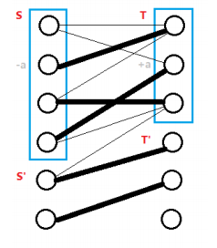

Bigraph weight match
二分图的最大权匹配是指二分图中边权和最大的匹配．
Hungarian Algorithm（Kuhn–Munkres Algorithm）
匈牙利算法又称为 KM 算法，可以在 $O(n^3)$ 时间内求出二分图的 最大权完美匹配．
考虑到二分图中两个集合中的点并不总是相同，为了能应用 KM 算法解决二分图的最大权匹配，需要先作如下处理：将两个集合中点数比较少的补点，使得两边点数相同，再将不存在的边权重设为 $0$，这种情况下，问题就转换成求 最大权完美匹配问题，从而能应用 KM 算法求解．
???+ note "可行顶标" 给每个节点 $i$ 分配一个权值 $l(i)$，对于所有边 $(u,v)$ 满足 $w(u,v) \leq l(u) + l(v)$．
???+ note "相等子图" 在一组可行顶标下原图的生成子图，包含所有点但只包含满足 $w(u,v) = l(u) + l(v)$ 的边 $(u,v)$．
???+ note "定理 1 : 对于某组可行顶标，如果其相等子图存在完美匹配，那么，该匹配就是原二分图的最大权完美匹配．" 证明 1.
考虑原二分图任意一组完美匹配 $M$，其边权和为
$val(M) = \sum_{(u,v)\in M} {w(u,v)} \leq \sum_{(u,v)\in M} {l(u) + l(v)} \leq \sum_{i=1}^{n} l(i)$
任意一组可行顶标的相等子图的完美匹配 $M'$ 的边权和
$val(M') = \sum_{(u,v)\in M} {l(u) + l(v)} = \sum_{i=1}^{n} l(i)$
即任意一组完美匹配的边权和都不会大于 $val(M')$，那个 $M'$ 就是最大权匹配．
有了定理 1，我们的目标就是透过不断的调整可行顶标，使得相等子图是完美匹配．
因为两边点数相等，假设点数为 $n$，$lx(i)$ 表示左边第 $i$ 个点的顶标，$ly(i)$ 表示右边第 $i$ 个点的顶标，$w(u,v)$ 表示左边第 $u$ 个点和右边第 $v$ 个点之间的权重．
首先初始化一组可行顶标，例如
$lx(i) = \max_{1\leq j\leq n} { w(i, j)},\, ly(i) = 0$
然后选一个未匹配点，如同最大匹配一样求增广路．找到增广路就增广，否则，会得到一个交错树．
令 $S$，$T$ 表示二分图左边右边在交错树中的点，$S'$，$T'$ 表示不在交错树中的点．

在相等子图中：
- $S-T'$ 的边不存在，否则交错树会增长．
- $S'-T$ 一定是非匹配边，否则他就属于 $S$．
假设给 $S$ 中的顶标 $-a$，给 $T$ 中的顶标 $+a$，可以发现
- $S-T$ 边依然存在相等子图中．
- $S'-T'$ 没变化．
- $S-T'$ 中的 $lx + ly$ 有所减少，可能加入相等子图．
- $S'-T$ 中的 $lx + ly$ 会增加，所以不可能加入相等子图．
所以这个 $a$ 值的选择，显然得是 $S-T'$ 当中最小的边权，
$a = \min { lx(u) + ly(v) - w(u,v) | u\in{S} , v\in{T'} }$．
当一条新的边 $(u,v)$ 加入相等子图后有两种情况
- $v$ 是未匹配点，则找到增广路
- $v$ 和 $S'$ 中的点已经匹配
这样至多修改 $n$ 次顶标后，就可以找到增广路．
每次修改顶标的时候，交错树中的边不会离开相等子图，那么我们直接维护这棵树．
我们对 $T$ 中的每个点 $v$ 维护
$slack(v) = \min { lx(u) + ly(v) - w(u,v) | u\in{S} }$．
所以可以在 $O(n)$ 算出顶标修改值 $a$
$a = \min { slack(v) | v\in{T'} }$
交错树新增一个点进入 $S$ 的时候需要 $O(n)$ 更新 $slack(v)$．修改顶标需要 $O(n)$ 给每个 $slack(v)$ 减去 $a$．只要交错树找到一个未匹配点，就找到增广路．
一开始枚举 $n$ 个点找增广路，为了找增广路需要延伸 $n$ 次交错树，每次延伸需要 $n$ 次维护，共 $O(n^3)$．
??? note "参考代码"
```cpp
template
hungarian(int _n, int _m) {
org_n = _n;
org_m = _m;
n = max(_n, _m);
inf = numeric_limits<T>::max();
res = 0;
g = vector<vector<T>>(n, vector<T>(n));
matchx = vector<int>(n, -1);
matchy = vector<int>(n, -1);
pre = vector<int>(n);
visx = vector<bool>(n);
visy = vector<bool>(n);
lx = vector<T>(n, -inf);
ly = vector<T>(n);
slack = vector<T>(n);
}
void addEdge(int u, int v, int w) {
g[u][v] = max(w, 0); // 负值还不如不匹配 因此设为0不影响
}
bool check(int v) {
visy[v] = true;
if (matchy[v] != -1) {
q.push(matchy[v]);
visx[matchy[v]] = true; // in S
return false;
}
// 找到新的未匹配点 更新匹配点 pre 数组记录着"非匹配边"上与之相连的点
while (v != -1) {
matchy[v] = pre[v];
swap(v, matchx[pre[v]]);
}
return true;
}
void bfs(int i) {
while (!q.empty()) {
q.pop();
}
q.push(i);
visx[i] = true;
while (true) {
while (!q.empty()) {
int u = q.front();
q.pop();
for (int v = 0; v < n; v++) {
if (!visy[v]) {
T delta = lx[u] + ly[v] - g[u][v];
if (slack[v] >= delta) {
pre[v] = u;
if (delta) {
slack[v] = delta;
} else if (check(v)) { // delta=0 代表有机会加入相等子图 找增广路
// 找到就return 重建交错树
return;
}
}
}
}
}
// 没有增广路 修改顶标
T a = inf;
for (int j = 0; j < n; j++) {
if (!visy[j]) {
a = min(a, slack[j]);
}
}
for (int j = 0; j < n; j++) {
if (visx[j]) { // S
lx[j] -= a;
}
if (visy[j]) { // T
ly[j] += a;
} else { // T'
slack[j] -= a;
}
}
for (int j = 0; j < n; j++) {
if (!visy[j] && slack[j] == 0 && check(j)) {
return;
}
}
}
}
void solve() {
// 初始顶标
for (int i = 0; i < n; i++) {
for (int j = 0; j < n; j++) {
lx[i] = max(lx[i], g[i][j]);
}
}
for (int i = 0; i < n; i++) {
fill(slack.begin(), slack.end(), inf);
fill(visx.begin(), visx.end(), false);
fill(visy.begin(), visy.end(), false);
bfs(i);
}
// custom
for (int i = 0; i < n; i++) {
if (g[i][matchx[i]] > 0) {
res += g[i][matchx[i]];
} else {
matchx[i] = -1;
}
}
cout << res << "\n";
for (int i = 0; i < org_n; i++) {
cout << matchx[i] + 1 << " ";
}
cout << "\n";
}
};
```
Dynamic Hungarian Algorithm
原论文 The Dynamic Hungarian Algorithm for the Assignment Problem with Changing Costs
伪代码更清晰的论文 A Fast Dynamic Assignment Algorithm for Solving Resource Allocation Problems
相关 OJ 问题 DAP
???+ note "算法思路" 1. 修改单点 $u_i$ 和所有 $v_j$ 之间的权重，即权重矩阵中的一行 - 修改顶标 $lx(u_i) = max(w_{ij} - v_{j}), \forall j$ - 删除 $u_i$ 相关的匹配 2. 修改所有 $u_i$ 和单点 $v_j$ 之间的权重，即权重矩阵中的一列 - 修改顶标 $ly(v_j) = max(w_{ij} - u_{i}), \forall i$ - 删除 $v_j$ 相关的匹配 3. 修改单点 $u_i$ 和单点 $v_j$ 之间的权重，即权重矩阵中的单个元素 - 做 1 或 2 两种操作之一即可 4. 添加某一单点 $u_i$，或者某一单点 $v_j$，即在权重矩阵中添加或者删除一行或者一列 - 对应地做 1 或 2 即可，注意此处加点操作仅为加点，不额外设定权重值，新加点与其他点的权重为 0.
???+ note "算法证明" - 设原图为 G，左右两边的顶标为 $\alpha^{i}$ 和 $\beta^{j}$，可行顶标为 l，那 $G_l$ 是 G 的一个子图，包含图 G 中满足 $w_{ij} = alpha_{i}+beta_{j}$ 的点和边． - 在上面匈牙利算法的部分，定理一证明了：对于某组可行顶标，如果其相等子图存在完美匹配，那么，该匹配就是原二分图的最大权完美匹配． - 假设原来的最优匹配是 $M^$, 当一个修改发生的时候，我们会根据规则更新可行顶标，更新后的顶标设为 $\alpha^{i^}$, 或者 $\beta^{j^}$，会出现以下情况： 1. 权重矩阵的一整行被修改了，设被修改的行为 $i^$ 行，即 $v_{i^}$ 的所有边被修改了，所以 $v_{i^}$ 原来的顶标可能不满足条件，因为我们需要 $w_{i^{}j} \leq alpha_{i^}+beta_{j}$，但对于其他的 $u_j$ 来说，除了 $i^$ 相关的边，他们的边权是不变的，因此他们的顶标都是合法的，所以算法中修改了 $v_{i^}$ 相关的顶标使得这组顶标是一组可行顶标． 2. 权重矩阵的一整列被修改了，同理可得算法修改顶标使得这组顶标是一组可行顶标． 3. 修改权重矩阵某一元素，任意修改其中一个顶标即可满足顶标条件 - 每一次权重矩阵被修改，都关系到一个特定节点，这个节点可能是左边的也可能是右边的，因此我们直接记为 $x$, 这个节点和某个节点 $y$ 在原来的最优匹配中匹配上了．每一次修改操作，最多让这一对节点 unpair，因此我们只要跑一轮匈牙利算法中的搜索我们就能得到一个新的 match，而根据定理一，新跑出来的 match 是最优的．
以下代码应该为论文 2 作者提交的代码（以下代码为最大化权重版本，原始论文中为最小化 cost）
??? note "动态匈牙利算法参考代码"
cpp
--8<-- "docs/graph/code/graph-matching/bigraph-weight-match/bigraph-weight-match_1.cpp"
转化为费用流模型
与 二分图最大匹配 类似，二分图的最大权匹配也可以转化为网络流问题来求解．
首先，在图中新增一个源点和一个汇点．
从源点向二分图的每个左部点连一条流量为 $1$，费用为 $0$ 的边，从二分图的每个右部点向汇点连一条流量为 $1$，费用为 $0$ 的边．
接下来对于二分图中每一条连接左部点 $u$ 和右部点 $v$，边权为 $w$ 的边，则连一条从 $u$ 到 $v$，流量为 $1$，费用为 $w$ 的边．
另外，考虑到最大权匹配下，匹配边的数量不一定与最大匹配的匹配边数量相等，因此对于每个左部点，还需向汇点连一条流量为 $1$，费用为 $0$ 的边．
求这个网络的 最大费用最大流 即可得到答案．此时，该网络的最大流量一定为左部点的数量，而最大流量下的最大费用即对应一个最大权匹配方案．
习题
??? note "UOJ #80. 二分图最大权匹配" 模板题
```cpp
--8<-- "docs/graph/code/graph-matching/bigraph-weight-match/bigraph-weight-match_2.cpp"
```